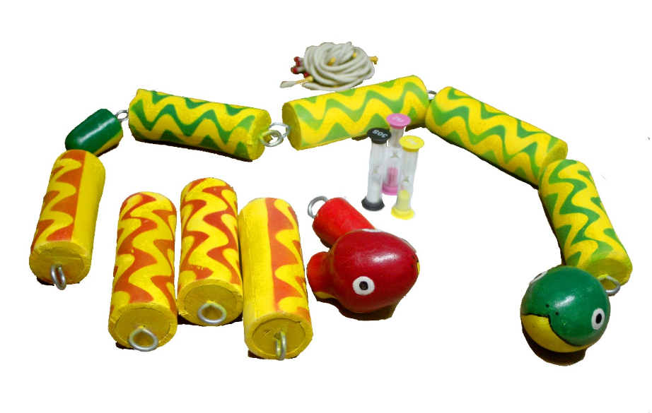
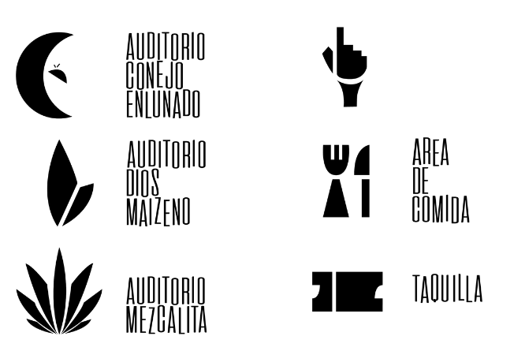
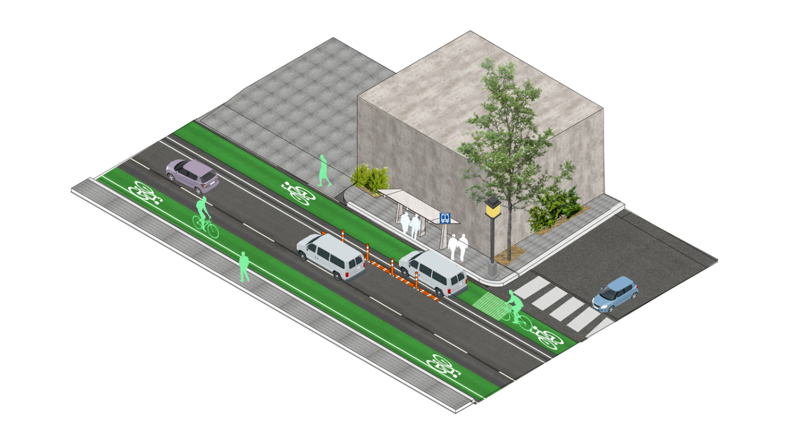

Portafolio
Natalia Jolly
¡Hola! Soy Natalia, tengo 20 años y actualmente curso el tercer año de la Licenciatura en Diseño Integral en la Universidad Autónoma Metropolitana. Me apasiona el diseño audiovisual (¡el cine es mi gran inspiración!), pero también he explorado diversas áreas como el diseño gráfico, industrial y web.
A diferencia de un programa de diseño tradicional, mi experiencia se enfoca en abordar problemáticas complejas desde múltiples perspectivas, integrando distintas disciplinas del diseño para encontrar soluciones innovadoras y funcionales. En otras palabras, ¡he hecho de todo!.
Para mí, el diseño no es solo técnica, sino una forma de pensar, crear y transformar el mundo que nos rodea.
Pero más que contarlo, prefiero mostrarlo. Aquí encontrarán algunos de mis proyectos que reflejan esta visión integral del diseño. ¡Espero que los disfruten!

Proyectos
Juego para el desarollo motor infantil “Serpinudos”
Ejercicio enfocado en diseñar un sistema de juego para niños de 6 a 8 años, con el objetivo de fortalecer la motricidad fina, especialmente la coordinación óculo-manual. El juego debía contar con un lenguaje formal adecuado para la edad, una temática atractiva y un diseño visualmente llamativo para incentivar su uso en un entorno doméstico.
El resultado fue un juego competitivo basado en atar y desatar nudos, tematizado con serpientes de colores. Las evaluaciones con usuarios demostraron un alto nivel de interés por parte de los niños y confirmaron que el diseño cumplía con los requisitos de desarrollo motor establecidos.

Identidad Gráfica “Centro Cultural Ecatedirco”
Este proyecto propone un espacio dedicado a la promoción y difusión de las artes, la cultura y el conocimiento dentro de una comunidad. Las actividades y servicios incluyen:
- Exposiciones y exhibiciones
- Conciertos y espectáculos de música, teatro y danza
- Talleres y cursos
- Venta de libros, souvenirs y artesanías
Para la propuesta gráfica, se emplearon formas sólidas y con bordes angulosos para reflejar el impacto y dinamismo del espacio. Se eligió una tipografía estrecha y alargada, con un desnivel entre letras, buscando transmitir una esencia innovadora y juvenil.

Propuesta de un sistema vial “ciclo-incluyente”
Este ejercicio exploró una solución innovadora para la organización del espacio vial, abordando el problema desde una perspectiva diferente a la tradicional. El objetivo fue reducir la ansiedad generada por la incertidumbre en los trayectos diarios mediante la implementación de sistemas de información y la reorganización de espacios urbanos, fomentando la convivencia pacífica entre ciclistas, conductores y peatones.
El proyecto buscó atender las necesidades de cada grupo involucrado:
- Ciclistas y conductores: libertad para transitar con tranquilidad e información clara sobre su recorrido.
- Peatones: espacios cómodos y seguros, libres de infraestructuras conflictivas.
- Conductores de servicios: rutas organizadas que les permitieran desempeñar su trabajo sin presiones.
